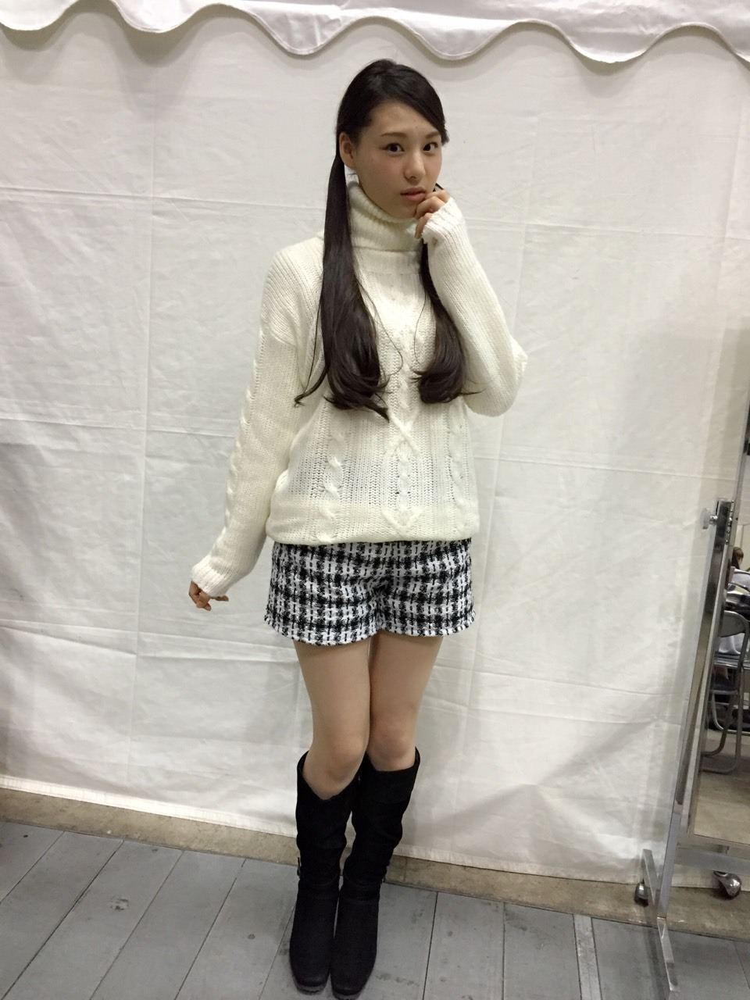
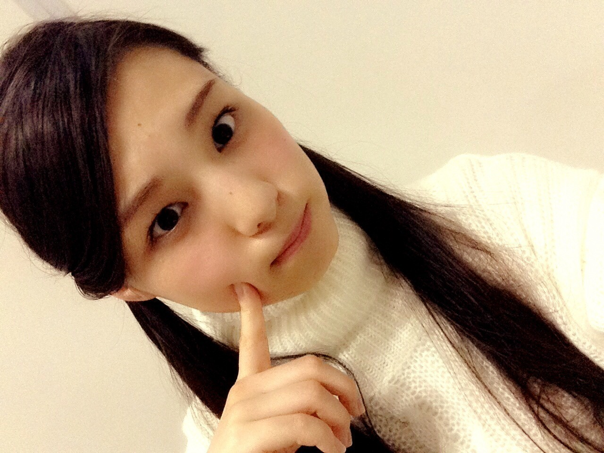
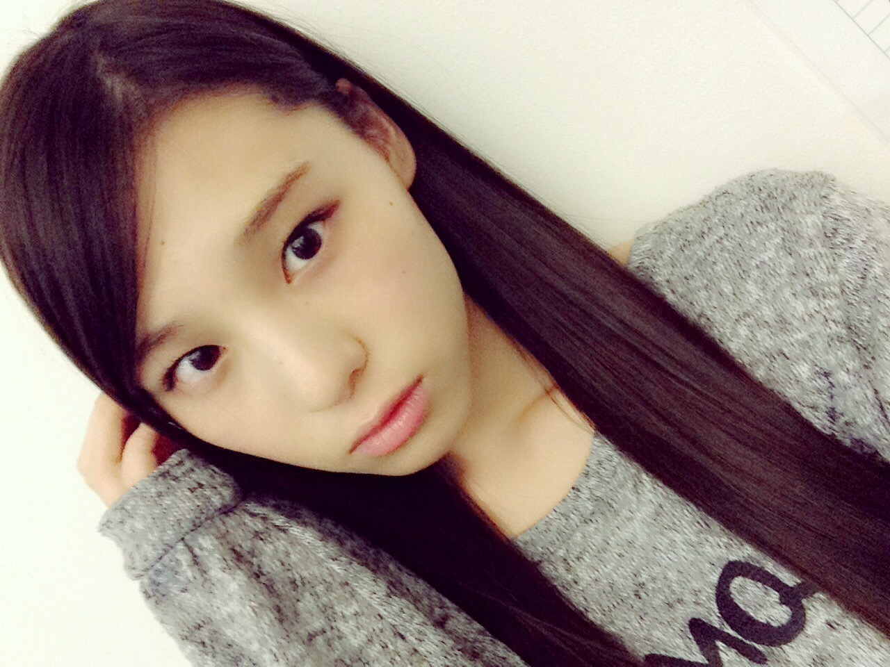

| 2015/01 22 Thu | 3 年前くらいの _(．．*)vol.2 |
みなさんこんばんはー！
さがらいおりです！
前回のブログ
コメントの多さにびっくりしました！
嬉しかったです♡
全部全部読みました！
本当に感謝してます♡
1 個前のブログのコメントも
読みました！！
先輩とか 2 期生もブログで
いおりのこと書いてくれてて
れなちと真夏さんは
コメントもくれて♡
改めて頑張らなきゃって思いました！
ありがとうございましたm(_ _)m
1/18 パシフィコ横浜
1 部
髪型は巻きおろし
ネックレス忘れちゃった(>_<)
2 部
髪型はお団子風
洋服は↓
3 部

上下 Magender
髪型はツインテール
あ、そう
顔に増えたの、ほくろだよ；）
えくぼは増えないし、
肌荒れはあまりしないの！
口の少し上と左の目の少し下に増えたの！

あんま分かんないか、
握手会で当てた方何人かいて
びっくりでしたー♡！
握手会楽しい好き
いつもありがとうございます♪♪
~いおり庵~
 いおりちゃん洗顔はどんなの使ってますか？
肌のお手入れしてますか？
いおりちゃん洗顔はどんなの使ってますか？
肌のお手入れしてますか？
いおりはあまり洗顔しないで
メイクしたときはオイルで落として
重曹使ってる！
たまに洗顔するくらい！
髪の毛のお手入れしてるー？
してないよー！
でも冬は静電気でいたみやすいから
コンディショナーしてから
少し時間おいて流すといいかな♡
安室奈美恵さんの曲の中で一番聞く曲って何？
最近は、
Balladaとグロテスク
一番好きなアルバムは
Past<Future
かな
オススメの正統派の漫才師のコンビっていないかな？
M-1歴代王者の方とか
オススメですよ
正統派とか関係なく
面白いコンビは沢山いるので
色々見てみて欲しいです♡
人生やり直せるなら女の子がいい？男の子がいい？
どっちでもいいかな～
｢傾斜する｣｢自由の彼方｣の、歌割り教えて！
｢傾斜する｣
1
♪君に彼がいること
サビ
♪だって平行だった
2
♪それならそれでいい
サビ
♪もしも距離置いてたら
自分で聞いても分からないから
あんま分かんないかも、、
｢自由の彼方｣
1
♪僕たちは 生きてきた
サビ
2
♪ねぇ今泣いてるならここまで帰ればいい
サビ
間奏あけ
♪人は誰も老いてくんだ
だよー！
あ！このあいだ
髪の毛 10 cm切ってきました！
何年前の髪の毛だったのかな～
自分的には
少し切りすぎた感じもしますけど
傷んでたので思い切って切りました！

この写真じゃなんもわかんないから
今度ちゃんと撮ってのせます！
8 月にも 15 cm切ったんだよね、、
伸びるの早い(ｏ_ｏ*)!!
これ
VENCE EXCHANGE
裏毛迷彩PREDAWNパーカープルオーバー
ってやつ！
優しい方が教えてくれました♡
ありがとう *˙︶˙*)ﾉ"
メンズもので色は他に
白もあったかな？
おそろにしてもいいよ(´,,•ω•,,)♡
次の握手会で着ようかな！
最近寒いから
風邪とかインフルエンザとか
気を付けて下さい(>_<)！
i o r i

コメント(420)
2015/01/22 20:00